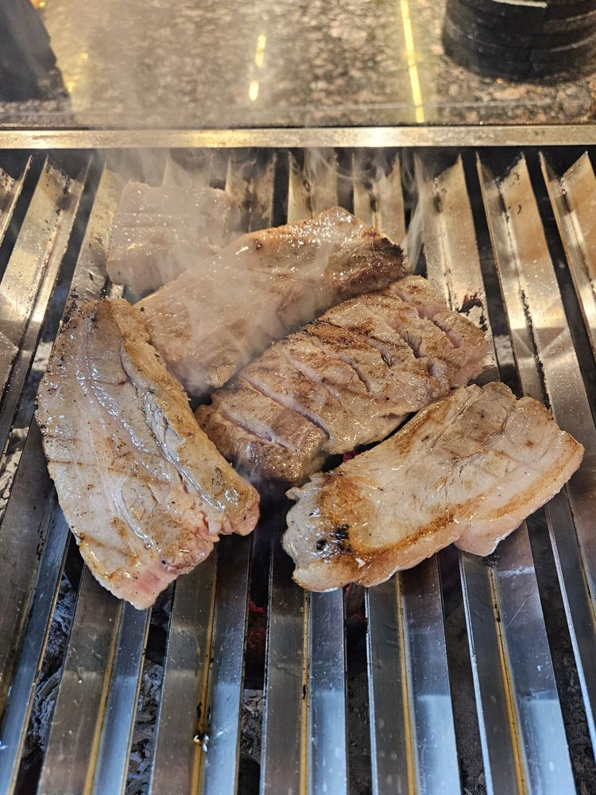
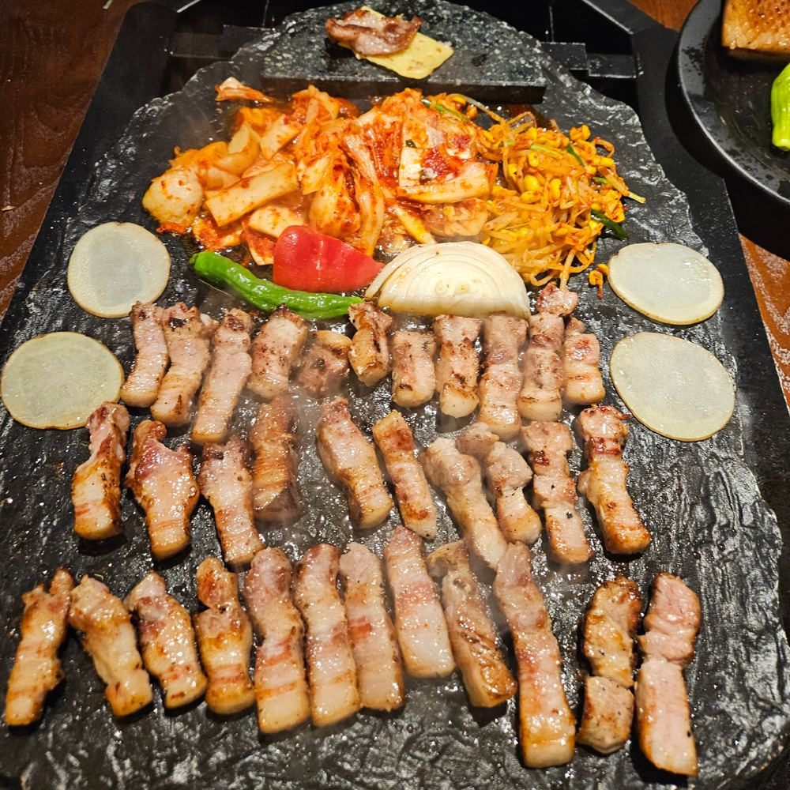
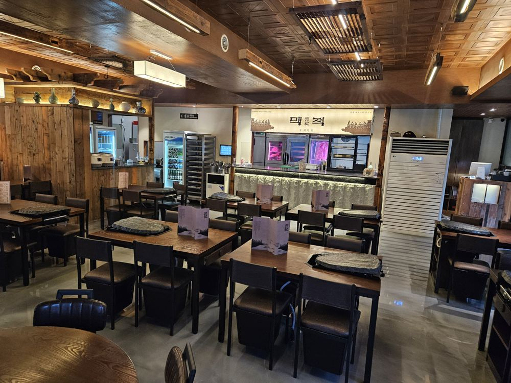
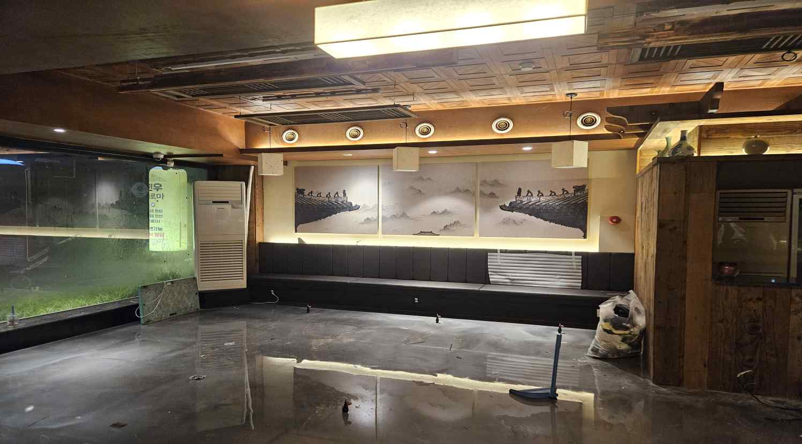

비짓전주 ‘전주의 맛 – 삼겹살’ 등재
전주시 공식 관광 플랫폼 「비짓전주」의 ‘전주의 맛 – 삼겹살’ 코너에 맥적이 실렸습니다.
불과 맛의 원형을 전하는 한국 고유의 식문화
맥적(貊炙)은 고구려 고분벽화 속, 불 위에 고기를 올려 굽던 한국 고기구이의 원형에서 시작되었습니다.
맥적(貊炙)은 맥족(貊族)의 구이로, 우리나라 고기구이 중 가장 오래된 고기요리를 의미합니다. 이규진·조미숙, 『한국고기구이의 문화사』
 부뚜막의 불
고기 걸이
부뚜막의 불
고기 걸이

불 위의 맛
그릴에 초벌하는 모습을 볼 수 있는 라이브 키친. 대리석 상판의 바 너머로 고기걸이 냉장고가 보입니다.
맥적은 고구려 시대부터 전해진 원초적 구이의 정신을 품고, 전주라는 역사와 문화의 도시에서 이를 현대적으로 재해석한 프리미엄 전통 BBQ 브랜드입니다.
주물판 → 참숯 → 돌판의 3단 마이야르 조리기술. 육즙·불향·식감의 조화입니다.



지역특산물로 만든 특제 된장소스를 발라 초벌, 전통 돌판에 굽는 방식
진짜 불맛을 찾기 위한 여정은 오로지 시간과의 싸움, 돼지구이 장인은 불맛을 설계하는 사람입니다. 온도와 시간을 정밀하게 다루는 손길로, 현대적 직화구이와 전통 돌판의 조화를 완성합니다. 원초성과 섬세함이 공존하는 차별화된 맛을 경험하세요.
“가장 맛있는 순간을 만들어드리는 직접 그릴링으로 손님을 맞이합니다”

16,000원
최고등급 마블고기를 3mm로 저며 전주의 창호지 같은 질감을 표현한 목살

15,000원
1+등급 선별 숙성된 마블고기를 15일간 숙성시킨 진품 삼겹살

19,000원
전주의 한옥 기와를 형상화하여 기와모양으로 자른 등심덧살
창호지목살 + 숙성세겹살 + 등심기왓살 + 토장찌개
67,000원
창호지목살 + 숙성세겹살 + 토장찌개
45,000원

청(깻잎), 적(파프리카·당근), 황(파인애플), 백(무채·양파), 흑(보라양배추)

5가지의 된장을 배합한 맥적의 시그니처 된장찌개. 우렁·차돌·냉이 중 선택

전주의 비빔밥을 형상화한 후식
전통의 품격과 현대의 감각을 잇는 전주 대표 고깃집, 세계가 주목하는 로컬 다이닝 경험

지금 운영
맥적 전주본점 운영

준비 중
직영으로 검증한 모델을 가맹으로

준비 중
창호지목살·세겹살 15일 숙성·등심기왓살 정형, 고기와 소스를 담은 BBQ 패키지
상품화 준비 중
전통장류로 만든 특제소스(마늘 육장·보리쌈장 등), 전주비빔볶음밥 소스·된장찌개 소스. 매장 상업용 주방에서 직접 제조

붉은 노을 아래 하루의 무게를 내려놓는 자리, 고기 한 점과 술 한잔에 위로가 스미는 이 곳은 한국인의 사랑방입니다.
그 옛날 주막처럼, 정과 쉼이 고스란히 살아 있는 위로의 공간이고자 합니다.


전북특별자치도 전주시 완산구 홍산북로 60-22 1층 101호효자동3가, 전주 신시가지
| 월·화 | 16:00 – 03:00 |
|---|---|
| 수 – 토 | 16:00 – 04:00 |
| 일 | 16:00 – 01:00 |
| 공휴일 | 17:00 – 04:00 |
라스트오더는 마감 1시간 전입니다.
프랜차이즈 준비 중
전통돼지구이 「맥적」을 현대적으로 복원하고, 전주 지역 식문화 콘텐츠를 결합한 K-BBQ 브랜드입니다.
처서가 지나고, 어느덧 9월을 앞두고 있습니다. 뜨거웠던 여름의 기운은 조금씩 잦아들고, 아침저녁으로 선선한 바람이 느껴지는 계절입니다.
가을의 시작, 맥적은 좋은 고기와 정성스럽게 만든 반찬, 그리고 가장 맛있는 순간을 만들어드리는 직접 그릴링으로 손님을 맞이합니다.
계절이 바뀌어도 변하지 않는 것은 좋은 재료와 한 끼에 담는 정성입니다. 다가오는 9월에도 전주의 맛과 따뜻한 한 상을 맥적에서 즐겨보세요.
가을의 시작, 불 위의 맛. 전주 맥적.
전주시 공식 관광 플랫폼 「비짓전주」의 ‘전주의 맛 – 삼겹살’ 코너에 맥적이 실렸습니다.
제40-2546564호, 43류 식당업. 한옥 지붕선과 불의 수호신, 전통 옛체를 담은 로고입니다.